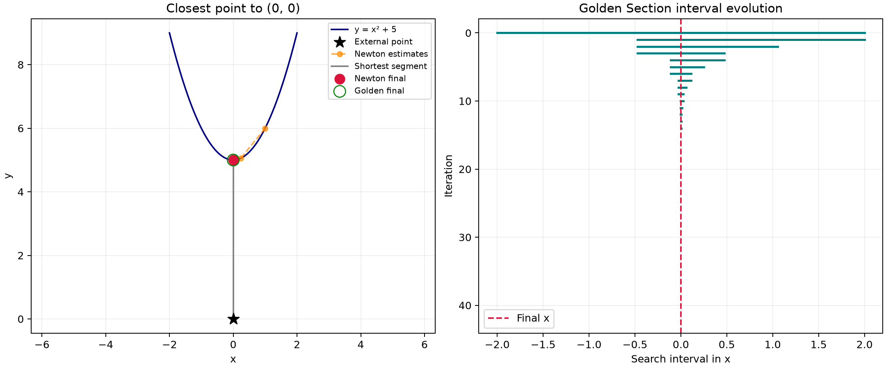
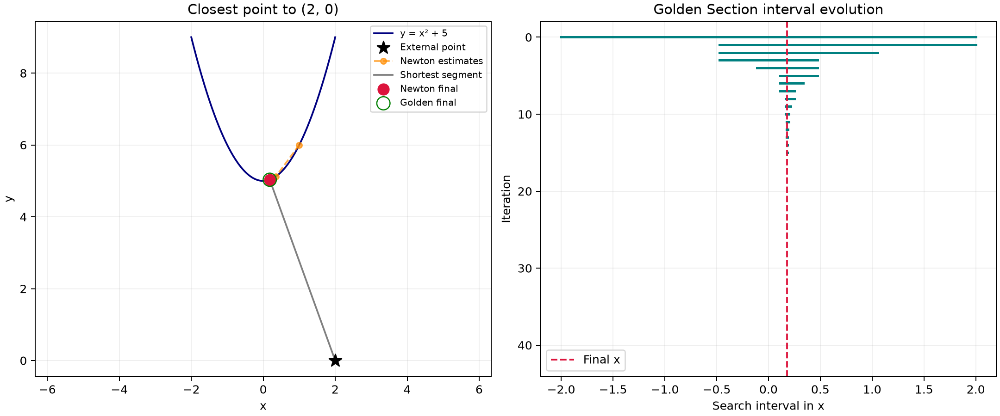
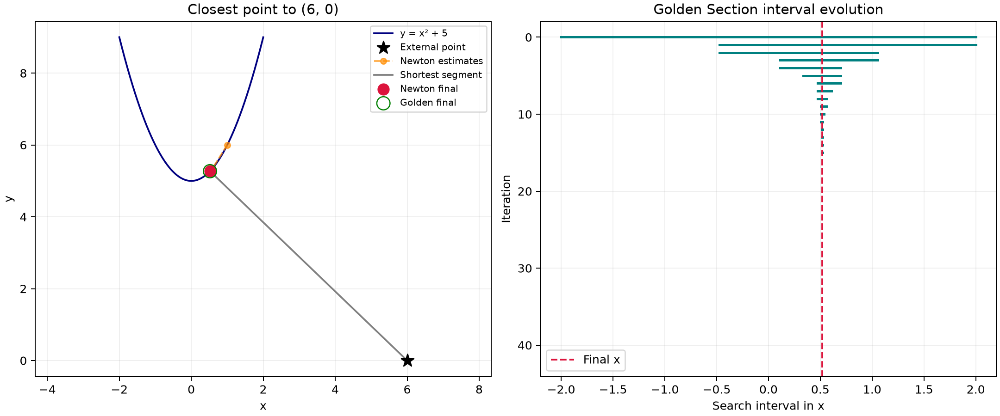
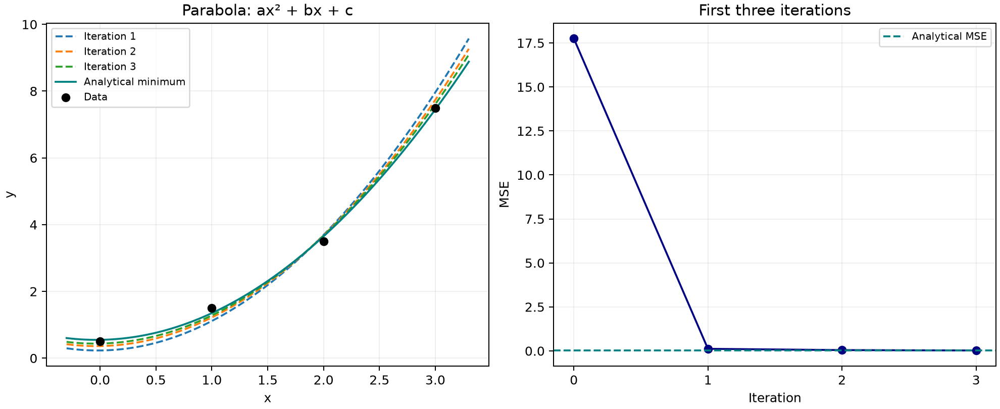

Homework 1
Part 1: Closest point on a curve
Minimize the squared distance from P = (x₀, y₀) to (x, f(x)).
Analytical approach
Differentiate the squared distance, set D′(x) = 0, and solve for x. For P = (p, 0) and f(x) = x² + 5:
D′(x) = 4x³ + 22x − 2p = 0
D″(x) = 12x² + 22 > 0
Solve the cubic for each value of p. When p = 0, it factors as 2x(2x² + 11) = 0, giving x = 0. Since D″ is positive everywhere, the real stationary point is the unique global minimum. Substitute x into Q = (x, x² + 5) and calculate √D(x) for the shortest distance.
1. Newton–Raphson
Newton–Raphson solves D′(x) = 0: at each step, use the tangent to D′ to estimate where the derivative becomes zero.
- Write D(x) for the given external point and calculate D′(x) and D″(x).
- Choose a starting estimate; the handwritten work uses x₁ = 1.
- Substitute the current estimate into the update below, then repeat using the new estimate.
- Use the final x to obtain Q = (x, f(x)) and distance √D(x). Check D″(x) > 0 to confirm a local minimum.
D″(x) = 2 + 2[f′(x)]² + 2(f(x) − y₀)f″(x)
xₙ₊₁ = xₙ − D′(xₙ) / D″(xₙ)
For P = (p, 0) and f(x) = x² + 5, the update becomes:
For example, p = −4 gives x₂ = 1 − 34/34 = 0, then x₃ = 0 − 8/22 ≈ −0.363636. Here D″ = 12x² + 22 is always positive, so the stationary point is the unique global minimum.
In the code: Newton update
for iteration in range(max_iter + 1):
y, slope, curvature = float(f(x)), float(df(x)), float(ddf(x))
d1 = 2*(x-x0) + 2*(y-y0)*slope
d2 = 2 + 2*slope**2 + 2*(y-y0)*curvature
distance_squared = (x-x0)**2 + (y-y0)**2
_finite(y, d1, d2, distance_squared)
history.append(dict(iteration=iteration, x=x, D=distance_squared,
gradient=d1, curvature=d2))
if abs(d2) <= curvature_tol:
status = 'near_zero_curvature'
break
if abs(d1) <= tol:
status = 'converged' if d2 > 0 else 'not_a_minimum'
break
if iteration == max_iter:
break
x -= d1/d2
_finite(x)
return _result(f, x, x0, y0, history, status)Newton loop: evaluate the distance derivatives, check convergence, and update x using D′/D″.
2. Golden Section Search
Golden Section Search finds a minimum without derivatives by repeatedly reducing a bracket [a, b].
- Choose an interval containing the minimum; the handwritten work uses [−2, 2].
- Calculate the two interior points below and compare D(x₁) with D(x₂).
- Discard the outer portion with the higher value, keeping the minimum bracketed.
- Reuse the surviving interior point, calculate one new point, and repeat.
x₁ = a + r(b − a), x₂ = b − r(b − a)
If D(x₁) < D(x₂), set b = x₂; otherwise set a = x₁. Use an interval where D is unimodal.
After stopping, report the remaining interval. For a single approximate answer, use x ≈ (a + b)/2, then calculate Q = (x, f(x)) and √D(x).
In the code: squared-distance objective
def objective(x):
value = (x-x0)**2 + (float(f(x))-y0)**2
_finite(value)
return valueSquared-distance objective: add the squared horizontal and vertical distances from the fixed point to the curve.
In the code: shrink the interval
r = 2 - (1 + sqrt(5))/2
x1, x2 = a + r*(b-a), b - r*(b-a)
d1, d2 = objective(x1), objective(x2)
history = []
for iteration in range(max_iter + 1):
history.append(dict(iteration=iteration, a=a, b=b, x1=x1, x2=x2,
D1=d1, D2=d2))
if b-a <= tol or iteration == max_iter:
break
if d1 < d2:
b, x2, d2 = x2, x1, d1
x1 = a + r*(b-a)
d1 = objective(x1)
else:
a, x1, d1 = x1, x2, d2
x2 = b - r*(b-a)
d2 = objective(x2)
status = 'converged' if b-a <= tol else 'max_iter'
return _result(f, (a+b)/2, x0, y0, history, status)Golden Section loop: retain the better interval, reuse one interior point, and stop at the width tolerance.
How many iterations?
The handwritten solutions use three Newton updates and three Golden Section interval reductions for each of the five external points. Newton starts at x₁ and calculates x₂, x₃, and x₄; the initial guess is not counted as an iteration.
The code follows its tolerances: Newton stops when |D′(x)| ≤ 10⁻¹⁰, and Golden Section stops when the interval width b − a ≤ 10⁻⁸. The results below are the code’s tolerance-based answers.
To meet those tolerances, Newton requires 4 updates for (0, 0), (2, 0), and (6, 0), and 5 updates for (−4, 0) and (−8, 0). Golden Section requires 42 interval reductions for every point: each run starts with the same interval width and stops at the same width tolerance, even if an intermediate estimate is already close to the answer.
3. Results for f(x) = x² + 5
The code starts Newton at x = 1 and Golden Section on [−2, 2].
| External point | Closest point | Distance |
|---|---|---|
| (0, 0) | (0.000000, 5.000000) | 5.000000 |
| (-4, 0) | (-0.355470, 5.126359) | 6.289845 |
| (-8, 0) | (-0.672078, 5.451689) | 9.133420 |
| (2, 0) | (0.180745, 5.032669) | 5.351396 |
| (6, 0) | (0.519904, 5.270300) | 7.603125 |
These are converged code results; the handwritten work shows a few iterations.
In the code: plot the search steps
nx = [h['x'] for h in newton['history']]
ax.plot(nx, [f(x) for x in nx], 'o--', color='darkorange',
alpha=0.7, label='Newton estimates', markersize=5)
for h in golden['history']:
intervals.plot([h['a'], h['b']], [h['iteration']]*2, color='teal', linewidth=2)Search plots: show Newton estimates on the curve and the shrinking Golden Section intervals.
View the five closest-point plots





4. Other functions
The same functions also handle f(x) = x³ − 2x + 1 and f(x) = eˣ.
For eˣ, both derivatives are eˣ; use P = (0, 0), Newton x = 0, and interval [−1, 0].
Using the same code tolerances, the cubic requires 4 Newton updates and 38 Golden Section reductions; the exponential requires 5 Newton updates and 39 Golden Section reductions. The initial guess is excluded from these counts. Golden Section starts on [0, 0.7] for the cubic and [−1, 0] for the exponential; the different starting widths explain its different counts.
Using a different curve
cases = [(f'parabola_{p}', lambda x:x*x+5, lambda x:2*x, lambda x:2,
(p, 0), 1.0, (-2, 2), (-2, 2), 'y = x² + 5')
for p in (0, -4, -8, 2, 6)]
cases += [('cubic', lambda x:x**3-2*x+1, lambda x:3*x*x-2, lambda x:6*x,
(0, 0), 0.2, (0, 0.7), (-0.5, 1.2), 'y = x³ − 2x + 1'),
('exponential', exp, exp, exp, (0, 0), 0.0,
(-1, 0), (-1.5, 0.8), 'y = exp(x)')]
for name, f, df, ddf, point, guess, interval, bounds, title in cases:
n = newton_closest_point(f, df, ddf, *point, guess)
g = golden_section_closest_point(f, *point, *interval)
assert n['converged'] and g['converged'], (name, n['status'], g['status'])
assert abs(n['x']-g['x']) < 1e-6, name
print(f'{name:14s} Newton x={n["x"]: .9f} Golden x={g["x"]: .9f} distance={n["distance"]:.9f}')
plot_search(f, point, n, g, bounds, title, output / f'part1_{name}.png')Example runs: pass each curve and its derivatives to both methods, check agreement, and save the plots.
View the cubic and exponential plots
![Cubic example with Newton starting at 0.2 and Golden Section on [0, 0.7].](docs/assets/part1_cubic.png)

Part 2: Line and parabola fitting
Data: (0, 0.5), (2, 3.5), (1, 1.5), (3, 7.5).
Analytical approach
Write the MSE in terms of the model’s coefficients, differentiate with respect to each coefficient, and set all partial derivatives to zero. Solve the resulting equations simultaneously: two equations for the line’s m and b, and three for the parabola’s a, b, and c.
For these data, each MSE is a strictly convex quadratic in its coefficients, so this solution gives the unique minimum. Substitute the coefficients back into the fitted function and the MSE to obtain the final curve and error.
In the code: prepare the model matrix
def _data(points, power):
"""Build columns [x, 1] or [x², x, 1] for the chosen model."""
data = np.asarray(points, dtype=float)
if power not in (1, 2):
raise ValueError('Choose power 1 (line) or 2 (parabola)')
if data.ndim != 2 or data.shape[1] != 2 or len(data) < power+1:
raise ValueError('Supply enough (x, y) points for the model')
if not np.all(np.isfinite(data)):
raise ValueError('Data must be finite')
design = np.vander(data[:, 0], power+1)
if np.linalg.matrix_rank(design) < power+1:
raise ValueError('The parameters require distinct x values')
names = ('m', 'b') if power == 1 else ('a', 'b', 'c')
return design, data[:, 1], namesModel matrix: build rows [x, 1] for the line or [x², x, 1] for the parabola and check that the coefficients can be determined.
In the code: analytical coefficients
def analytical_fit(points=POINTS, power=1):
"""Set the MSE derivatives to zero and solve the normal equations."""
design, y, names = _data(points, power)
parameters = np.linalg.solve(design.T @ design, design.T @ y)
return _row(parameters, names, design, y)Analytical fit: solve the normal equations for the coefficients, then calculate the MSE.
Iterations in Part 2
The handwritten work and the script’s displayed results use three complete iterations for both models, starting with all coefficients at zero. One iteration updates m then b for the line, or a then b then c for the parabola.
When the fitting function is allowed to continue with its default settings, it needs 50 iterations for the line and 555 for the parabola to make every MSE partial derivative have magnitude ≤ 10⁻¹⁰. These counts use sequential parameter updates from zero. The analytical method solves the equations directly and needs no iterative updates.
In the code: sequential Newton updates
curvature = 2*np.mean(design**2, axis=0)
steps = []
converged = False
for iteration in range(max_iter+1):
row = _row(parameters, names, design, y)
steps.append(dict(iteration=iteration, **row))
gradient = 2*design.T @ (design @ parameters-y)/len(y)
if not np.all(np.isfinite(gradient)) or not np.isfinite(row['mse']):
raise ValueError('Nonfinite fit evaluation')
if np.max(np.abs(gradient)) <= tol:
converged = True
break
if iteration == max_iter:
break
for j in range(len(names)):
# Recompute residuals so each update uses the newest parameters.
residual = design @ parameters-y
derivative = 2*np.mean(residual*design[:, j])
parameters[j] -= derivative/curvature[j]
return dict(**row, steps=steps, converged=converged,
status='converged' if converged else 'max_iter')Sequential Newton: update each coefficient using the newest values; stop when all MSE partial derivatives meet the tolerance.
In the code: MSE and convergence
def _row(parameters, names, design, y):
"""Return named coefficients and their mean squared error."""
row = dict(zip(names, map(float, parameters)))
row['mse'] = float(np.mean((design @ parameters-y)**2))
return row
def main():
output = Path(__file__).parent / 'plots'
output.mkdir(exist_ok=True)
for name, power in [('line', 1), ('parabola', 2)]:
exact = analytical_fit(power=power)
numerical = sequential_newton_fit(power=power, max_iter=3)
print(f'{name}: analytical={exact}')
for row in numerical['steps'][1:]:
print(row)
plot_fit(POINTS, power, numerical, exact, output / f'part2_{name}.png')MSE and execution: average the squared residuals, run three iterations for each model, and print and plot the results.
1. Line: ŷ = mx + b
Substitute the four points into the MSE.
Set both derivatives to zero to find the analytical minimum.
∂MSE/∂b = 3m + 2b − 6.5 = 0
m = 2.3, b = −0.2, MSE = 0.575
For each numerical iteration, update m first, then b using the new m.
bₙ₊₁ = bₙ − (3mₙ₊₁ + 2bₙ − 6.5)/2
| Iteration | m | b | MSE |
|---|---|---|---|
| 0 | 0.000000 | 0.000000 | 17.750000 |
| 1 | 2.214286 | -0.071429 | 0.584184 |
| 2 | 2.244898 | -0.117347 | 0.578795 |
| 3 | 2.264577 | -0.146866 | 0.576568 |

2. Parabola: ŷ = ax² + bx + c
Include all three coefficients in the MSE.
Set the three partial derivatives to zero and solve the equations.
18a + 7b + 3c = 15.5
7a + 3b + 2c = 6.5
a = 0.75, b = 0.05, c = 0.55
Starting from zeros, update a, then b, then c using the latest values.
bₙ₊₁ = bₙ − (18aₙ₊₁ + 7bₙ + 3cₙ − 15.5)/7
cₙ₊₁ = cₙ − (7aₙ₊₁ + 3bₙ₊₁ + 2cₙ − 6.5)/2
| Iteration | a | b | c | MSE |
|---|---|---|---|---|
| 0 | 0.000000 | 0.000000 | 0.000000 | 17.750000 |
| 1 | 0.846939 | 0.036443 | 0.231050 | 0.117988 |
| 2 | 0.800544 | 0.056722 | 0.363012 | 0.046400 |
| 3 | 0.774243 | 0.067798 | 0.438452 | 0.023332 |
After three iterations, MSE ≈ 0.023332. The analytical minimum is 0.0125.
In the code: plot intermediate fits
for row in result['steps'][1:4]:
ax.plot(xs, np.polyval([row[k] for k in names], xs), '--',
label=f'Iteration {row["iteration"]}')
rows = result['steps'][:4]
loss.plot([s['iteration'] for s in rows], [s['mse'] for s in rows], 'o-', color='navy')Fitting plots: draw the first three fitted curves and track MSE from the initial values through iteration 3.
